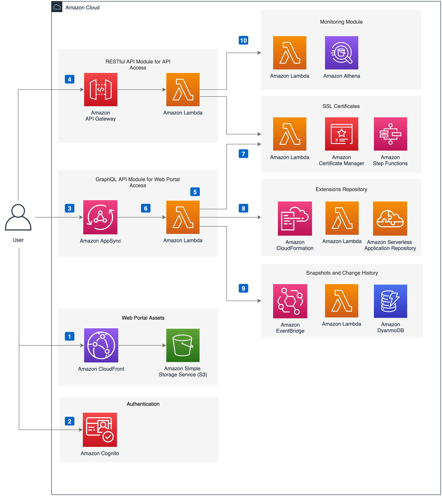

| :- | :- |
|---|---|
| 类型 | Solution |
| 状态 | 正式发布 |
| 一键部署 | 官网 (中国) |
| 代码开源 | GitHub Repo |
随着云计算等技术的快速发展，CDN (内容分发网络) 行业发展加速，市场规模不断提升。Gartner 的研究显示，到2025年，在“传统的”集中式数据中心或云存储以外处理的企业生成数据的比例，将从2018年的10%跃升至75%。Amaon CloudFront是亚马逊云科技的CDN服务，也是客户最常使用的服务之一。当客户有大量的网站使用CloudFront分发时，会产生繁重的日常运维工作。
客户期望能够围绕Amazon CloudFront提高运维效率、拓展业务功能，主要包括以下应用场景。
使用CloudFront的客户通常会面临两方面的挑战：
因此，客户希望有一个统一的平台，在一定程度上实现运维的自动化，并且获得丰富的扩展功能。同时，这些功能可以作为亚马逊云科技的最佳实践供客户参考复用和二次开发。
该方案提供了一站式的 Amazon CloudFront 应用与管理的最佳实践，用户可通过一键部署快速实现如下用户场景。
CloudFront Extensions是一个开箱即用的解决方案，帮助客户高效地运维其亚马逊云科技账号中上百个CloudFront分配 (CloudFront Distribution)。客户可以灵活地按需使用方案多项功能，例如监控、预热、防盗链、版本控制、网站鉴权、根据用户设备类型跳转等。方案当前的v2.0版本在v1.x版本的基础上全面整合了各项功能，客户可以使用方案自带的用户界面或API搭配CloudFront服务使用，轻松管理网站内容的分发。
该方案是一站式的 Amazon CloudFront 最佳实践，可轻松一键部署，同时是开源的，支持用户二次开发。
无部署前提条件。客户没有任何基础，也能快速搭建出演示或 POC 系统进行展示和验证。
可通过 SAR 或 Amazon CloudFormation 一键部署，部署时间大约为30分钟。
该方案的成本主要为 Lambda@Edge 和 CloudFront Functions 的使用费用。前者与 Lambda 函数的请求次数、单次运行时间、分配的内存量等因素有关，后者与请求次数有关。
该方案提供源代码和Amazon CloudFormation模板。客户可以参考实施指南，运行Amazon CloudFormation模板一键部署。客户可以自行修改源代码来满足特定的需求。如需要咨询技术问题，请在GitHub上提交issue，或通过客户经理联系我们。

可提供支持的合作伙伴：
新版本主要包括以下创新和功能优化：
新版本发布，提供更多易用特性。